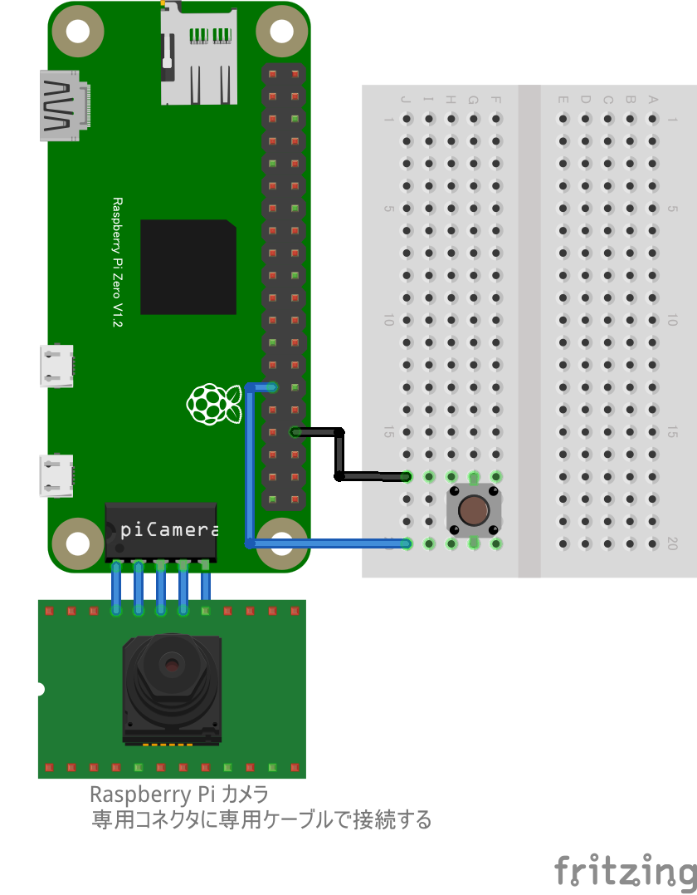

// GPIO5のスイッチを押すと、Raspberry Pi Cameraで撮影し、ファイルに保存する
// ライブラリ pi-camera-connect をまずインストールする必要があります。readmeを参照してください。
import { StillCamera } from "pi-camera-connect";
import * as fs from "fs";
import { requestGPIOAccess } from "./node_modules/node-web-gpio/dist/index.js";
const sleep = (msec) => new Promise((resolve) => setTimeout(resolve, msec));
const stillCamera = new StillCamera({
width: 600,
height: 600,
});
async function switchCheck() {
const gpioAccess = await requestGPIOAccess();
const port = gpioAccess.ports.get(5);
await port.export("in");
port.onchange = takeImage;
}
async function takeImage(ev) {
if (ev.value == 1) {
// 押し下げたときだけ撮影
return;
}
const image = await stillCamera.takeImage();
const fileName = "still-image-" + new Date().getTime() + ".jpg";
console.log("sw:", ev.value, " takeImage:", fileName);
fs.writeFileSync(fileName, image);
}
switchCheck();タクトスイッチは GPIO PORT5 に繋ぎます。
カメラは専用コネクターに専用ケーブルを使って接続し、更にセットアップが必要です。次章を参照してください
Raspberry Pi のカメラを API で直接操作するpi-camera-connectを使った方法です。Pi-Cameraを使った方法(gist はこちら)より、大幅に高速に画像が取得できることを確認しています。
Note
利用可能なカメラモジュールは v1、v3 です。Camera Module v2 には未対応です。 また Raspberry Pi Zero 用 CHIRIMEN v1.4.0 未満をお使いの場合、Camera Module v3 には未対応です。 Raspberry Pi Zero 用 CHIRIMEN v1.4.0 以上 をお使いください。
以下のコマンドで画像ファイルが保存されます:
raspistill -v --width 640 --height 480 -o test.jpgNote
Raspberry Pi Zero 用 CHIRIMEN v1.4.0 以上 をお使いの場合、rpicam-still --list-camerasコマンドで利用可能なカメラの一覧を表示可能です:$ rpicam-still --list-cameras Available cameras ----------------- 0 : ov5647 [2592x1944 10-bit GBRG] (/base/soc/i2c0mux/i2c@1/ov5647@36) Modes: 'SGBRG10_CSI2P' : 640x480 [58.92 fps - (16, 0)/2560x1920 crop] 1296x972 [43.25 fps - (0, 0)/2592x1944 crop] 1920x1080 [30.62 fps - (348, 434)/1928x1080 crop] 2592x1944 [15.63 fps - (0, 0)/2592x1944 crop]
pi-camera-connect のリポジトリの readme と同じ内容ですが、オプションを加えてみました
import { StillCamera } from "pi-camera-connect";
import * as fs from "fs";
// Take still image and save to disk
async function runApp() {
const stillCamera = new StillCamera({
width: 600,
height: 600,
});
const image = await stillCamera.takeImage();
fs.writeFileSync("still-image.jpg", image);
}
runApp();dataURL を取得
import { StillCamera } from "pi-camera-connect";
// Take still image and get dataURI
async function runApp() {
const stillCamera = new StillCamera({
width: 200,
height: 200,
});
var mime = "image/jpeg";
var encoding = "base64";
const image = await stillCamera.takeImage();
const b64str = image.toString(encoding);
const dataURL = "data:" + mime + ";" + encoding + "," + b64str;
console.log(dataURL);
}
runApp();